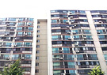
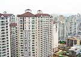
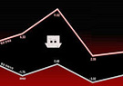

2013 결산. 네이버 부동산 칼럼위원 5인에게 듣는다. 박근혜정부 부동산정책에 대한 평가 및 개선과제
- 단국대부동산학 조명래 2013 서민주거안정을 위한 부동산 정책은 매매 활성화도 못하고, 전 월세도 못잡는 정책이었음 2014 매매 중심의 인위적인 정책이 아닌 임대중심 거래에 맞는 정책이 필요함
- 주거복지연대 장성수 2013 정부의 부동산 대책은 국회의 문턱을 넘지 못해 시장의 불신만 확산시킴 2014 실물경기 개선 및 전세가 상승으로 일부 전세수요가 매매수요로 전환 예상
- 대안금융경제연구소 김동환 2013 실물경기 개선 및 전세가 상승으로 일부 전세수요가 매매수요로 전환 예상 2014 미국 유동성 공급이 계속 된다면 국내 부동산시장도 호재로 작용예상
- 인성회계법인 유종오 2013 정부의 부동산정책은 부동산 매매가 침체하락에 대한 저지효과 있었음 2014 소득과 재산에 근거한 부동산 과세 제도로 개편 필요
- 국민대부동산학 강병기 2013 부동산은 수도권과 비수도권으로 양극화되어 다른 양상을 보임 2014 혁신신도시 입주지역을 중심으로 부동산 회복 전망
2013 부동산 핫뉴스
-
1월
부동산 신화믿고 빚내
투자… 한순간 추락 -
2월
현재 수도권 ‘부촌지도’
바뀌고 있다 -
3월
무너지는 부동산 시장
떨고 있는 하우스 푸어 -
4월
임대아파트 4월부터
쏟아져 ‘청약전략 중요’ -
5월
99칸 정승집 부럽지 않소
나만의 한옥 -
6월
지금 대한민국은
‘원룸 공화국’ -
7월

대한민국에 ‘빈집대란’
온다는데! -
8월

급매물 쑥 들어갔다는데
… 도대체 왜? -
9월

부동산 뒤집어지는
최악의 시나리오 -
10월
대형의 ‘굴욕’…
‘53평보다 싼 65평’ -
11월
‘아파트야 어쩌란 말이냐’
양도세 종부세 폭탄.. -
12월
다주택 보유자 이제는
정리할 때
2013 이슈 돌아보기
ISSUE 부동산이슈 총정리
12월 수직증축 리모델링 법안통과
행복주택, 목돈안드는 전세 제도 등을 대폭 손질하고 1%대 저리의 공유형 모기지 대상을 확대하기로 함
-

- 12·3후속조치 이후, 서울 아파트값 4주만에 상승 전환
- /제공=한국감정원© News1 매물부족 심화, 전국 전세가격 68주 연속 올라 (서울=뉴스1) 임해중 기자 = 공유형모기지 확대, 정책모기지 일원화 등을 담은 12·3후속조치 발표 이후... 뉴스1 2013.12.12
-
- 12·3후속조치 이후, 서울 아파트값 4주만에 상승 전환
- /제공=한국감정원© News1 매물부족 심화, 전국 전세가격 68주 연속 올라 (서울=뉴스1) 임해중 기자 = 공유형모기지 확대, 정책모기지 일원화 등을 담은 12·3후속조치 발표 이후... 뉴스1 2013.12.12
-
- 12·3후속조치 이후, 서울 아파트값 4주만에 상승 전환
- /제공=한국감정원© News1 매물부족 심화, 전국 전세가격 68주 연속 올라 (서울=뉴스1) 임해중 기자 = 공유형모기지 확대, 정책모기지 일원화 등을 담은 12·3후속조치 발표 이후... 뉴스1 2013.12.12
-
- 12·3후속조치 이후, 서울 아파트값 4주만에 상승 전환
- /제공=한국감정원© News1 매물부족 심화, 전국 전세가격 68주 연속 올라 (서울=뉴스1) 임해중 기자 = 공유형모기지 확대, 정책모기지 일원화 등을 담은 12·3후속조치 발표 이후... 뉴스1 2013.12.12
지금 투표해보세요
2013 부동산정책 만족도
Question
2013년 박근혜정부 부동산정책에 대한 만족도는?
2013년 박근혜정부는 부동산 대책을 통하여 다양한 조치를 취했는데요. 그럼에도 불구하고 '미친 전세'라는 말이
무색할만큼 전세가는 연속 고공행진을 하고 있습니다. 박근혜정부의 부동산정책에 대한 만족도는 몇 점이신가요?